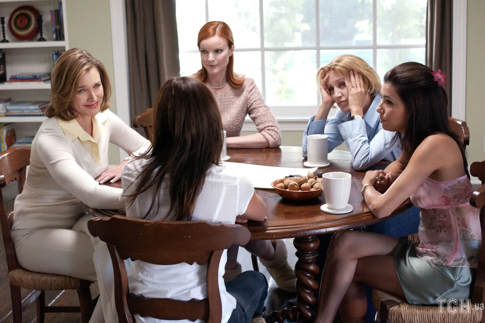

О сериале
"Отчаянные домохозяйки" - культовый сериал о жизни четырёх женщин, чьи идеальные жизни в пригороде оказываются полны тайн, предательств и неожиданных поворотов.
Смесь драмы, детектива и чёрной комедии, которая держит в напряжении с первой до последней серии.
Смотреть эпизоды

Главные героини

Бри Ван де Камп
Перфекционистка с тёмными секретами

Габриэль Солис
Бывшая модель с острым языком
Линетт Скаво
Уставшая мать четверых детей
Сьюзан Майер
Неуклюжая романтичка
"Дружба - это когда одна женщина знает все твои секреты и всё равно любит тебя" - Бри Ван де Камп